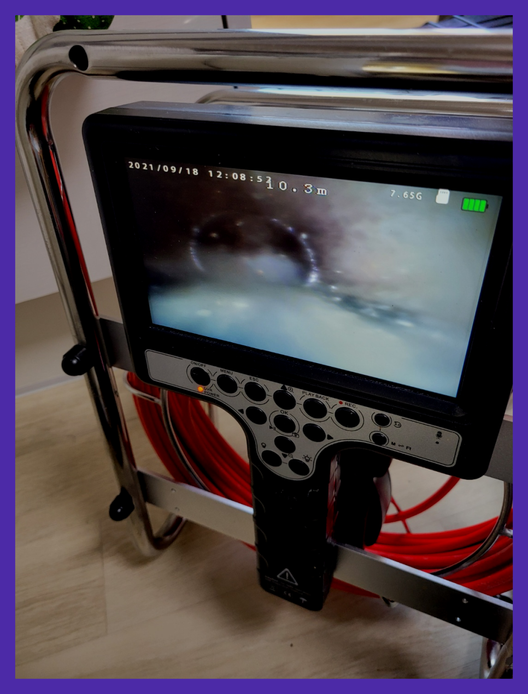
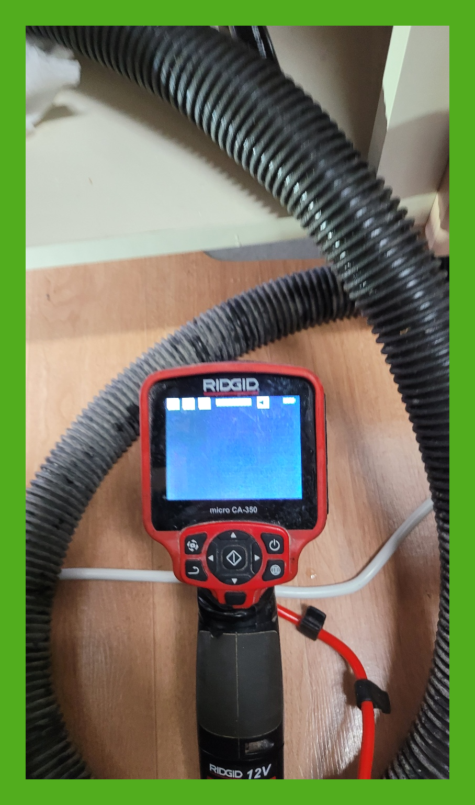
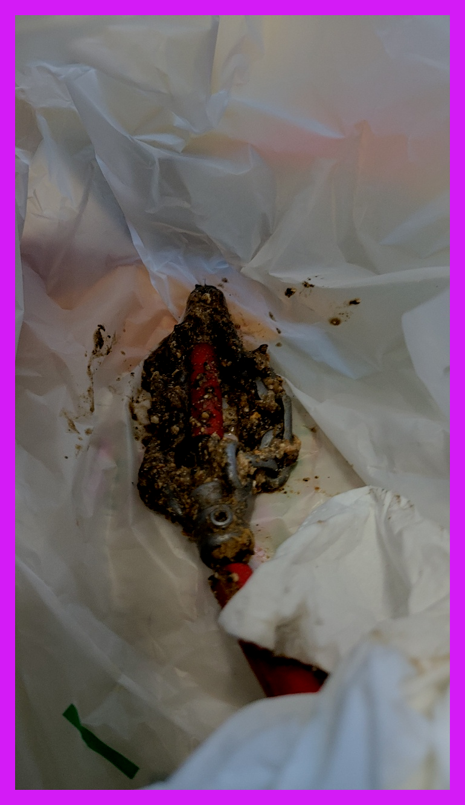
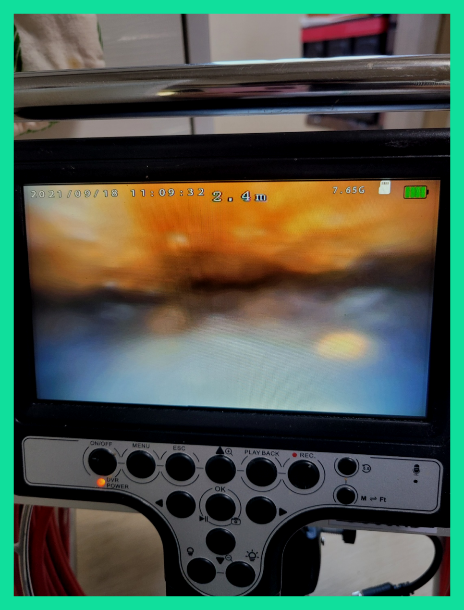
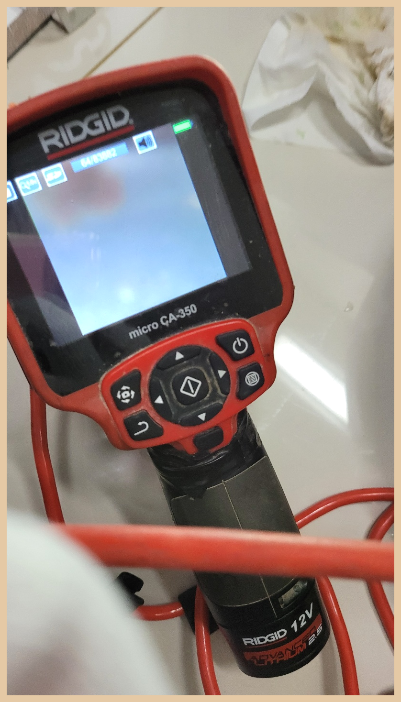
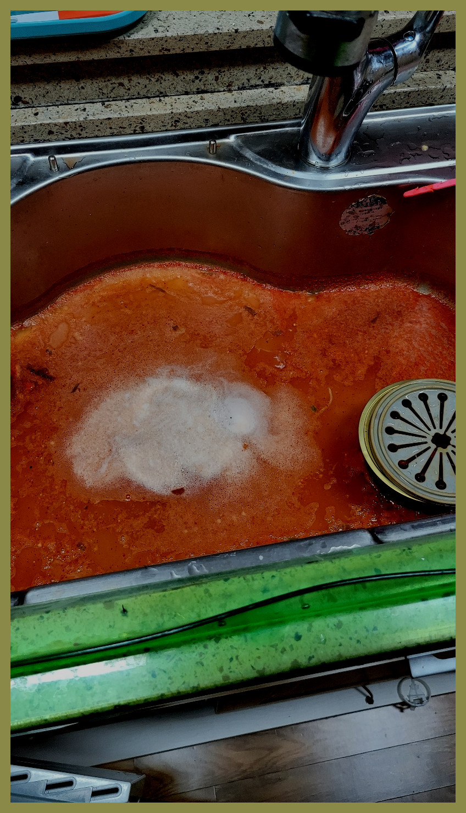

🏠 분당 대장동 주방씽크대막힘 운중동 배수관 기름때 청소 출장설비
용인 대장동 싱크대막힘 전문 시공 후기

📋 작업 개요
- 위치: 용인 대장동, 대장동, 용인
- 서비스 유형: 싱크대막힘, 변기막힘, 하수구막힘, 배관막힘, 누수수리, 역류해결, 뚫는업체, 배관청소, 고압세척, 설비공사
- 작업 일시: 2024. 3. 17. 21:55
- 업체명: 하수구수사대 (010-5615-2118)
🔍 문제 상황
어서오세요
설비전문업체 "하수구수사대"를 찾아주셔서 고맙습니다.
하수도는 워낙 당연하게 이용하는 시설이기 때문에 인지하지 않고 모르고 살아가지만 우리에게는 없어서는 안될 설비중에 하나입니다.
고객님께서 배수구 문제가 발생하시면, 저희에게 상담을 요청하시면, 최신 기술을 활용하여 빠르고 효율적으로 처리해드리겠습니다. 현장 리뷰를 통해 업체의 전문성과 높은 신뢰도를 확인하실 수 있습니다. 더불어, 배수구배관 문제뿐만 아니라 건물 전체의 배관 상태까지 유연하게 확인하며 최적의 해결책을 제시해드립니다.
분당 대장동 주방씽크대막힘 운중동 배수관 기름때 청소 출장설비
🔎 원인 분석
💡 전문가 진단: 분당 대장동 주방씽크대막힘 운중동 배수관 기름때 청소 출장설비
강조하고 싶은 게 또 있다면 수많은 기계들을 적절하게 준비해 놓았는가 입니다. 배출구실내든 실외든 구조도 그렇고 이물질 형태는 현장들마다 다릅니다. 그럼에도 장비를 부족하게 준비되어 있는 곳이라면 변수가 된느 상황에는 해결이 불가능해질 확률이 높아집니다.
고객님께서는 화장실의 배수에도 문제가 생기면서 변기에서 물내림이 좋지 않은 것 같다고 말씀하셨습니다. 그 말씀을 듣고 나니 저희는 메인 하수구의 배관이 막혀있을 가능성도 함께 살펴봐야 할 것으로 보였습니다.
만약 배수관배관이 파손이 된다면 공사로 이어진다 보니 많은 지출을 하게 된다는 점을 알고 계셨으면 해요. 예약하신 고객분께서도 직접 해보시려고 한 흔적은 있었지만 다행히도 심한 압박을 주지 않았는지 괜찮았어요.
이 장비는 비교적으로 약한 기계이긴 하지만 시메트처럼 굳은것을 긁어서 해결하는데에는 필수라고 할 수 있습니다. 직접적으로 이물질 분쇄 작업으로 해주는 기계가 있으며 입구부분부터 깊숙하게 있는 이물질보다는 일단 조금은 약한 부분부터 살살 긁으면서 내려갈 구멍을 만들었습니다.
다세대 주택에서는 여러 세대의 사람들이 한 배관을 이용하는 곳인 만큼 불편함을 줄이기 위해서 하수도문제를 빠른 해결을 하고자 현장으로 즉시 출동을 하였습니다. 이번 현장을 통해서 배관 막힘을 전문 업체에서는 어떻게 해결을 하게 되었는지를 알려드리도록 하겠습니다.
심각한일은아닐거라 여기고 배수관막힘 상황을 내버려두다가 또다른 문제가 발생해 추가적인 비용을 쓰는곳이 많이있어요. 다른예시로는 수리비를아끼려고 자기힘으로 수리해보려다가 잘해결이 안되면 아무기계나 써보십니다. 어떤고객님은 철사같은것들은 편히구부리기가 가능하기때문에 배수관청소에 착각하시는데꼭그렇지만은않습니다.

🔧 작업 과정
그동안 머리카락이 조금씩 배관을 따라 흘러내려가 배관을 막히게 했던 것 같고, 빨래나 기타 세척과정에서 나오는 이물질들 또한 배수배관으로 흘러내려가 켜켜이 쌓인 것이 원이 이 되었던 것 같습니다. 고객님께 상세하게 설명을 드리고, 이물질을 빼내는 작업을 시작하였습니다.
베테랑의해결법과 간단한물건들과의 차이가 어떤것일지 생각해보길바래요.배출구깊은데를 확인할수있어서 간단한것부터 다르다는것을 보실수있습니다.안쪽을볼수없을때에 뚫리기만을기다리면 의문이들게되는데요.똑바로해결됐을까? 라는생각이듭니다.
작업을 나갈 때 필요한 배수구장비를 모두 챙겨서 나가기 때문에 현장에서 진단하고 필요한 장비로 배수구막힘 문제를 도와드리고 있는데요. 최신 장비를 보유한배수구 업체들이 많다고 해도 능숙하고 섬세하게 장비를 다룰 수 있어야 같은 문제로 걱정하시는 일이 없게 된답니다.
이들 이물질 때문에 물이 빠져나가는 통로가 좁아지면서 배수가 느려지고 하수도물이 막히는 것입니다. 이물질이 안쪽에서 썩어가면서 악취의 원인이 되기도 합니다. 이외에도 하수도배관이나 소모품의 노후화나 파손, 파열 등이 문제의 원인이 되기도 합니다.
게다가 이제 막 일을 시작한 경우라면 오히려 기계를 사용하다 배수구배관 안에 구멍을 만든다거나 소모품을 빠뜨리는 등의 추가적인 문제를 발생시킬 가능성이 있습니다. 실제로 저희에게 연락을 주시는 분들의 전화를 받아보면 큰 고민 없이 주변 배수구 업체에 일을 맡겼다가 후회하시는 분들도 많으셨습니다.
이번 현장은하수관 통수가 잘 이뤄지지 않다 보니 오물이 위로 올라와 물이 차있는 형태여서 일단 위쪽에 올라온 오물과 함께 이물질들을 석션 장비로 흡입했습니다.
주방배출관 배관에 쌓인 이물질이 오랫동안 머물면 단단하게 굳어 약품으로는 제거가 되지 않습니다. 그래서 또 다시 배출관막힘이 반복적으로 발생합니다. 하수구청소 전문가는 최첨단 전문장비로 배출관막힘 원인을 확실하게 파악하고 근본적인 원인을 없애 해결해드리고 있습니다.
저희는 내시경 카메라를 비롯하여 고압세척기, 석션기, 플렉스 샤프트 등 다양한 전문 장비를 갖추고 있으며 해당 퇴수구장비를 능숙하게 활용할 수 있는 인력들도 충분히 있다는 점 다시 한번 말씀드립니다!


✅ 작업 완료
얼마 전에 갔던 원룸 건물도 싱크대 배출관 문제가 생겼지만 지나치셨다가 누수까지 발생하여 바닥재에 영향을 끼치고 밑에 집에도 피해가 가버린 곳이었습니다. 이런 사례도 있기에 내려벼 두시기보다는 별것 아닌 것 같아도 전문 기사와 이야기해 보시는 것이 올바르다고 말씀드립니다.
어떤 현장이든 만족스러운 결과물을 고객님들에게 최대한 보여드리기 위해서 최신장비를 총동원하여 해결해 드리니 걱정마시고 언제든지 연락주시기 바랍니다.
#하수구막힘 #하수구뚫음 #하수구역류 #씽크대막힘 #싱크대역류 #오수관막힘 #하수구청소 #욕실하수구막힘 #변기막힘 #하수구뚫는비용 #싱크대수리 #화장실막힘




⚠️ 베란다 누수 및 방수 관리 방법
- ✅ 비가 많이 올 때 창틀 주변이나 아래층 천장에 얼룩이 생기는지 정기적으로 확인해 보세요.
- ✅ 우수관 주변 실리콘 마감이 들뜨거나 깨진 틈새가 있는지 손상 여부를 수시로 체크하세요.
- ✅ 베란다 바닥 타일의 줄눈(메지)이 소실되면 그 틈으로 물이 침투하여 누수가 유발됩니다.
- ✅ 누수 의심 증상 발견 시 방치하면 아래층 손실이 커지므로 즉시 전문가의 진단을 받으십시오.
💡 핵심 정리
- 확실한 장비 작업(내시경 점검 및 샤프트 스케일링)으로 원인을 뿌리 뽑습니다.
- 작업 후 1년 이내에 동일한 부위 재발 시 100% 무상 A/S 서비스를 보장합니다.
- 서울 · 경기 · 인천 전 지역에 24시간 언제든 긴급 출동할 수 있도록 항시 대기 중입니다.
❓ 자주 묻는 질문 (FAQ)
🚨 용인 대장동 싱크대막힘 문제로 고민이신가요?
정확한 원인 진단과 확실한 시공으로 재발 없는 해결을 약속드립니다.
24시간 긴급 출동 | 서울 · 경기 · 인천 전지역 | 1년 내 재발 시 무상 A/S